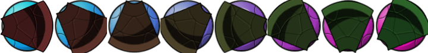

The Sprite Editor Animation Menu
This section explains the actions available from
the animations menu.
 Under the animation
menu you can create new animated sprites out of the current
sub-images. There are many options and you should experiment a bit
with them to create the effects you want, as most of them work well
when used together, rather than as individual effects. Also, don't
forget that you can always save an animated sprite and later add it
to the current one to create a single, larger animation. The
following options exist for you to edit animations:
Under the animation
menu you can create new animated sprites out of the current
sub-images. There are many options and you should experiment a bit
with them to create the effects you want, as most of them work well
when used together, rather than as individual effects. Also, don't
forget that you can always save an animated sprite and later add it
to the current one to create a single, larger animation. The
following options exist for you to edit animations:
- Set Length: Here you can change the length of your
animation. To achieve this, GameMaker: Studio duplicates the
sub-images from the beginning to end, repeating them again and
again until the required number of sub-images has been
reached.
- Stretch: As above, this command will also change the
length of the animation, but this time sub-images are duplicated or
removed to get the right number. So if you increase the number of
frames the animation goes slower as more sub-images are generated
between the current ones, and if you decrease the number it goes
faster.
- Reverse: This reverses all the sub-images so the
animation of the sprite plays backwards.
- Add Reverse: This option will duplicate all the
sub-images, then add them on at the end of the animation in
reverse, doubling the number of sub-images. You may want to remove
the double first and middle frame that occur with this to maintain
a smooth animation.
- Translation Sequence: With this command you can create
an animation in which the image slightly translates (moves) in each
frame. You must provide the number of frames and the total amount
to move horizontally and vertically, and GameMaker: Studio
will do the rest.
- Rotation Sequence: This creates an animation in which
the image rotates. You can either choose clockwise or
counterclockwise rotation, and you have to specify the number of
frames and the total angle in degrees (360 is a complete turn) that
should be completed in within those frames. You might need to
resize the canvas first to make sure the total image remains
visible during the rotation.
- colourize: Creates an animation that turns the image
into a particular colour, as shown below:
- Fade to colour: Creates an animation that fades the
image to a particular colour, as seen below:
- Disappear: Makes the image disappear by making it more
transparent in each step. An example is provided below:
- Shrink: Shrinks the image to nothing in the direction
indicated (center, left, right, top or bottom). Below is a shrink
towards the center:
- Grow: Grows the image from nothing in the direction
indicated (center, left, right, top or bottom). Below is a grow
towards the center:
- Flatten: "Flattens" the image to nothing in a given
direction (left, right, up or down) ie: gives the sub-images a
perspective effect that looks like it's being laid flat, as shown
below:
- Raise: Similar to the above command, this "raises" the
sub-images from a given direction (left, right, up or down):
- Overlay: This command will ask you to select a file for
overlaying with the currently selected sprite. The file can be a
single image (in which case it is repeated over every frame) or a
strip (in which case it must have a file name that ends in
_stripXX or GameMaker: Studio will treat it as a
single image). When the image from the file has a different size it
is stretched to the maximal size of the sprite being overlaid.

- Morph: Morphs the animation to an animation or image
from a file. Note that morphing works best if the two animations
cover the same area of the image, otherwise, halfway certain pixels
disappear and others suddenly appear. This is due to it not really
being a "true" morph, but rather a fade in/out of alpha
(transparencies).
© Copyright YoYo Games Ltd. 2018 All Rights Reserved